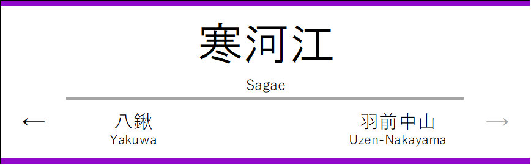

サインシステム
羽前急行のサインシステムについて説明します。
駅名標のデザイン
羽前急行のサインシステムは、駅名標や案内表示などに使用される独自のデザインを採用しています。
上下のラインは、駅ごとに4パターンが順番に使用されており、降り間違えを防ぐための工夫が施されています。



実際に駅で使用されている駅名標です。
クリックでポップアップ拡大表示されます。
放送内容について
羽前急行では、ワンマン運転のため自動放送が設定されています。車内では始発放送・途中駅放送の2種類があります。
構文一覧
- 始発駅出発放送
本日も、羽前急行をご利用くださいまして、ありがとうございます。この列車は、([直通がある場合直通先路線]直通、)[種別名]、[行先の途中主要駅]方面、[行先]行きです。([ワンマン運転の場合]行き、ワンマン列車です。)途中の、水沢温泉館、あさひ月山湖、下名川、上山添、広栄町([上りと下りで順序は異なる])の各駅は、駅係員がいませんので、一番前の、運転士後ろの精算機で運賃をお支払いください。ICカードをご利用のお客様は、駅の簡易改札機にタッチしてください。次は、[駅名]、[駅名]です。
- 途中駅出発放送
ご乗車、ありがとうございます。次は、[駅名]、[駅名]です。
- 到着放送
まもなく、[駅名]、[駅名]に到着します。[(有人駅)ホーム側、すべてのドアが開きます。お降りのお客様は、お近くのドアからお降りください。][(無人駅)駅係員がいませんので、一番前の、運転士後ろの精算機で運賃をお支払いください。ICカードをご利用のお客様は、駅の簡易改札機にタッチしてください。][(月山沢→月山、三川→庄内空港)へおいでのお客様は、こちらでお降りください。][(乗換路線がある場合)[乗換路線]ご利用のお客様は、こちらでお乗り換えください。][(終着駅の場合)本日も、羽前急行をご利用くださいまして、ありがとうございました。]